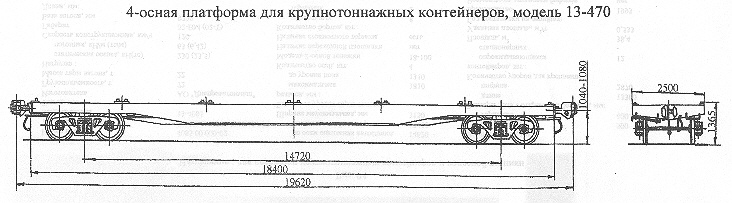

Назначение: для перевозки типовых крупнотоннажных контейнеров массой брутто 10, 20 и 30т
Параметры
| Номер проекта | 470.00.000-4 |
| Технические условия | ТУ 24-5-317-76 |
| Модель вагона | 13-470 |
| Тип вагона | 946 |
| Изготовитель | Аб ВЗ |
| Грузоподъемность, т | 60 |
| Масса тары вагона, т | 22 |
| Нагрузка: статическая осевая, кН(тс) |
205,0(20,5) |
| погонная, кН/м(тс/м) | 41,8(4,18) |
| Скорость конструкционная, км/ч | 120 |
| Габарит | 0-ВМ(01-Т) |
| База вагона, мм | 14720 |
| Длина, мм: по осям сцепления автосцепок |
19620 |
| по концевым балкам рамы | 18400 |
| Ширина максимальная, мм | 2500 |
| Высота от уровня верха головок рельсов, мм: максимальная |
1365 |
| до уровня пола | 1275 |
| Количество осей, шт. | 4 |
| Модель 2-осной тележки | 18-100 |
| Наличие переходной площадки | нет |
| Наличие стояночного тормоза | есть |
| Площадь, м² | 46 |
| Удельная площадь, м²/т | 0,77 |
| Количество упоров для крепления контейнеров, шт.: опрокидывающихся |
20 |
| стационарных | 4 |
| Год постановки на серийное производство | 1976 |
| Возможность установки буфера | нет |